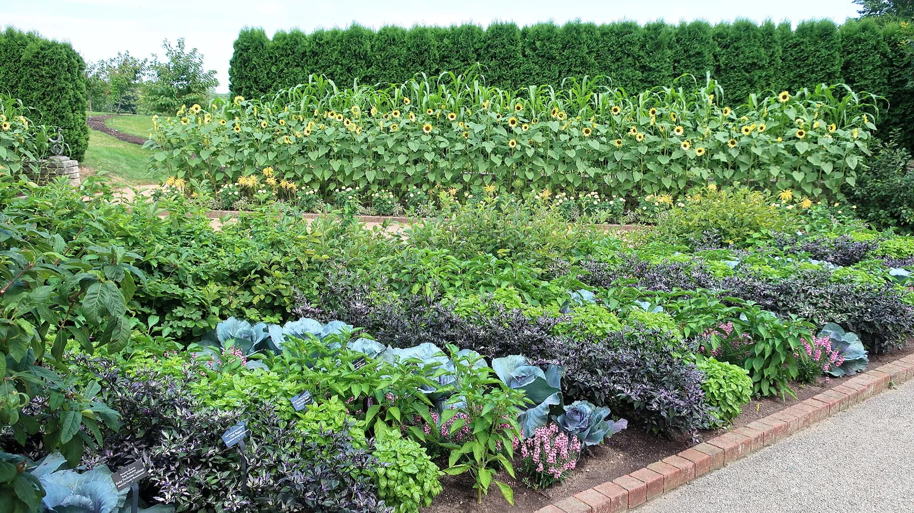

Guilds
38 guilds — the planner calls them plant teams. The list is short on purpose: a guild is here only if it names a mechanism or is honest about having none. There is no companion-planting chart, and there never will be.
Guilds that help each other
Plants that do something for each other, with the reason named. The best-backed come first.
- Four Sisters polyculture · 4 m²43.1 ft² minimum · corpus-backed
- Melon Sisters polyculture · 4 m²43.1 ft² minimum · corpus-backed
- Milpa polyculture · 50 m²538.2 ft² minimum · corpus-backed
- Sweet-Potato Milpa polyculture · 4 m²43.1 ft² minimum · corpus-backed
- Three Sisters polyculture · 4 m²43.1 ft² minimum · corpus-backed
- Brassicas With Aromatic Herbs polyculture · 1 m²10.8 ft² minimum · partly backed
- Carrot Chive And Lettuce polyculture · 1 m²10.8 ft² minimum · partly backed
- Carrot Onion And Dill polyculture · 1 m²10.8 ft² minimum · partly backed
- Dry Herb Bed perennial guild · 1.5 m²16.1 ft² minimum · partly backed
- Melon Sisters (Small Bed) polyculture · 1.5 m²16.1 ft² minimum · partly backed
- Perimeter Trap Crop polyculture · 8 m²86.1 ft² minimum · partly backed
- Summer Shade Salad polyculture · 4 m²43.1 ft² minimum · partly backed
- Sweet-Potato Milpa (Small Bed) polyculture · 1.5 m²16.1 ft² minimum · partly backed
- Three Sisters (Small Bed) polyculture · 1.5 m²16.1 ft² minimum · partly backed
- Tomatillo Pair polyculture · 4 m²43.1 ft² minimum · partly backed
- Tomatillo Pair (Small Bed) polyculture · 3 m²32.3 ft² minimum · partly backed
- Forage Strip polyculture · 1 m²10.8 ft² minimum
Trees and shrubs with their rings
A tree, a shrub or a vine at the centre, its understory in rings out to the drip line.
- Apple Team perennial guild · 25 m²269.1 ft² minimum · corpus-backed
- Blackberry Hedge perennial guild · 3 m²32.3 ft² minimum · partly backed
- Blueberry Team perennial guild · 3 m²32.3 ft² minimum · partly backed
- Currant Team perennial guild · 4 m²43.1 ft² minimum · corpus-backed
- Fruit Tree Team (Dwarf) perennial guild · 9 m²96.9 ft² minimum · corpus-backed
- Grape Arbour perennial guild · 6 m²64.6 ft² minimum · partly backed
- Kiwi Arbour perennial guild · 9 m²96.9 ft² minimum · partly backed
Kitchen and cutting bundles
Grouped because you use them together, not because they help each other. Each page says so.
- Cutting Garden ornamental bundle · 1.5 m²16.1 ft² minimum · grown to cut
- Perennial Vegetable Patch culinary bundle · 3 m²32.3 ft² minimum · chosen for the kitchen
- Pesto Garden culinary bundle · 0.5 m²5.4 ft² minimum · chosen for the kitchen
- Pickling Garden culinary bundle · 1.5 m²16.1 ft² minimum · chosen for the kitchen
- Pizza Garden culinary bundle · 2.5 m²26.9 ft² minimum · chosen for the kitchen
- Pizza Garden (Patio) culinary bundle · 1 m²10.8 ft² minimum · chosen for the kitchen
- Salad Garden culinary bundle · 3 m²32.3 ft² minimum · chosen for the kitchen
- Salsa Garden culinary bundle · 3 m²32.3 ft² minimum · chosen for the kitchen
- Salsa Garden (Patio) culinary bundle · 1 m²10.8 ft² minimum · chosen for the kitchen
- Stir-Fry Garden culinary bundle · 1.5 m²16.1 ft² minimum · partly backed
Rest and cover
Cover crops that rest the ground and pay next season's crop.
- Rotation Break restorative · 0.3 m²3.2 ft² minimum · a rest for the soil
- Winter Cover Pair restorative · 0.3 m²3.2 ft² minimum · a rest for the soil
Systems the planner does not place
Documented for what they are, and honest about being out of scope for a bed.
- Chinampa out of scope
- Rice Fish Duck out of scope